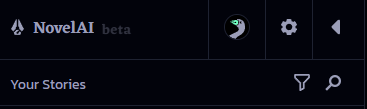
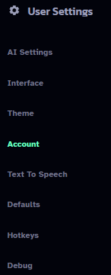
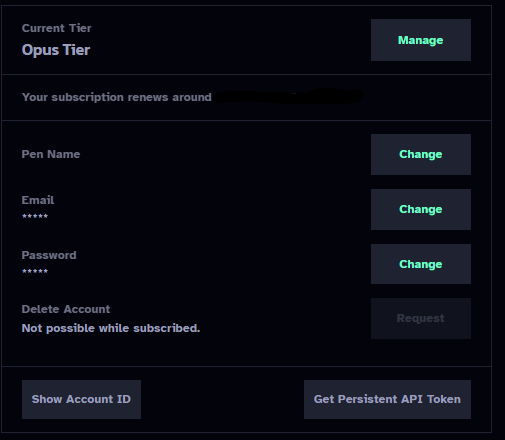
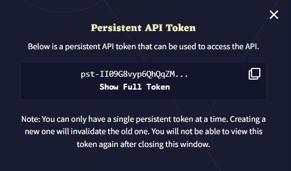

#
NovelAI
NovelAI是一项付费订阅服务，允许用户无限制地每月访问其高质量的内部文本生成、图像生成和文本转语音模型。在此注册账户以开始使用：https://novelai.net/
您将仅获得50次生成的免费体验，以评估该模型。当出现**“不符合该模型的资格”**错误时，这意味着您已用尽试用期，需要订阅付费计划。
#
API 密钥
要获取您的 NovelAI API 密钥，请按照以下步骤操作：
选择左侧边栏顶部的齿轮图标。
 Left Sidebar 在“用户设置”下选择“账户”。
 User Settings 选择“获取持久 API 令牌”。
 Account 选择复制图标，将您的 NovelAI API 令牌复制到剪贴板。
 Persistent API Token
#
模型
您应该使用 Kayra。
Clio 不是一个糟糕的模型，但不如 Kayra 强大。Clio 的速度优势微不足道。在 NovelAI 的平板和卷轴层级中，Clio 确实具有比 Kayra 更大的上下文大小，但与 Kayra 提供的更好的连贯性/文笔质量相比，这种权衡不太可能是值得的。
#
设置
设置文件位于此处 (SillyTavern/data/<user-handle>/NovelAI Settings)。
您也可以手动添加自己的设置文件。
#
响应长度
您希望每条消息生成多少文本。请注意，NovelAI 每个响应的限制为 150 个标记。
#
上下文大小
聊天中在任何给定时间保留多少个令牌。您可以使用的最大上下文大小取决于模型和您的订阅级别：
- Kayra (Tablet) - 3072 tokens
- Kayra (Scroll) - 6144 tokens
- Kayra (Opus) 和 Clio (所有级别) - 8192 tokens
#
前言
插入在聊天顶部以修改写作风格的文本。推荐格式是一个简短标签的列表，例如 "[ 风格: 聊天, 详细, 感官 ]"。
#
预设描述
根据 Novel AI 的说法，默认预设的用途如下。
#
Kayra
- Asper - 适合创意写作。期待意想不到的转折。
- Blended-Coffee - (CFG) 新鲜咖啡与一些CFG混合在一起。
- Blook - (CFG) 倾向于简单、简洁但多样的语言。
- Carefree - 一款优秀的全能型工具
- CosmicCube - (CFG) 一个稳固、合理的基线。根据偏好调整随机性。
- Fresh-Coffee - 保持事情在正轨上。很好地处理指令。
- Green-Active-Writer - (CFG) 类似于Writer's Daemon，但具有高CFG。
- PilotFish - (CFG) 专为丰富背景的创意写作而设计。
- Pro_Writer - 模仿畅销小说的节奏和感觉。
- Stelenes - 更可能选择合理的替代方案。重试时具有多样性。
- Tea_Time - 一旦开始就变得精彩。
- Tesseract - (CFG) 维持风格和质量。
- Writers-Daemon - 极具想象力，有时甚至过于丰富。
#
Clio
- Edgewise - 处理多种生成风格表现良好
- Fresh Coffee - 保持事情的进展。
- Long-Press - 旨在创造性散文。
- Talker Chat - 设计用于聊天风格生成。
- Vingt-Un - 一个优秀的全能默认选项，倾向于散文。
#
使用NovelAI与SillyTavern的提示和常见问题解答
在从其他ST后端API切换到NovelAI时，常常会出现许多常见问题和疑问。区别在于模型的训练目标。您很可能使用过OpenAI或Anthropic模型（或类似的本地模型），这些模型是围绕遵循用户指令构建的。NovelAI的模型则完全围绕文本补全构建：NAI的模型试图继续输入的提示，而不是将您的输入视为消息并形成响应。由于这种差异，许多适用于其他API的提示和常识在NAI中可能无法使用。
#
调整 NovelAI 的设置
在高级格式设置（A 图标）下：
- 将“上下文模板”设置为“NovelAI”
- 将“分词器”设置为“最佳匹配”
- 勾选“始终将角色名称添加到提示中”
- 勾选“折叠连续换行”
- 取消勾选“指令模式”下的“启用”框
在用户设置（带齿轮的人物）下：
- 开启“滑动”（虽然不是 NAI 特有的，但非常实用，建议开启）
#
为NovelAI构建/调整角色卡
为了优化您的角色卡以适应NovelAI，有几种推荐的方法来撰写角色描述：散文和属性。
散文非常简单，甚至让人觉得这应该不起作用：“Sylpheed是一个看起来年轻但实际上已经900岁的女神。她身材矮小，纤细，长长的白发在她编辫子的侧马尾中渐变成绿色，翡翠绿的眼睛呈十字形。[...]” 不，真的，仅此而已。只需用正常的句子写出角色的外貌、行为等，AI就会捕捉到这些信息。
如果您不相信自己的写作能力，或者想要一种更结构化的方法，可以使用属性方法，这在NovelAI的训练数据中存在。这种方法作为简单的角色特征列表，适用于不同类型。以下是一些经过测试与NovelAI模型有效的可能属性列表：
Name:
AKA:
Type: character
Setting:
Nationality:
Species:
Gender:
Age:
Height:
Weight:
Appearance:
Clothing:
Attire:
Personality:
Mind:
Mental:
Likes:
Dislikes:
Sexuality:
Speech:
Voice:
Abilities:
Skills:
Quote:
Affiliation:
Occupation:
Reputation:
Secret:
Family:
Allies:
Enemies:
Background:
Description:
Attributes:“Type: character”是为了告诉AI这是在描述一个角色（而不是地点、物体或其他类型的事物）。其余的属性是可选的，有些是多余的（例如，Personality、Mind和Mental基本上意味着相同的东西），但这些经过测试，与NovelAI的模型效果良好。填写与您的角色相关的属性即可。属性应以小写字母书写，并用逗号分隔，无需在单词周围加引号。例如：
Skills: lockpicking, stealth, running away very fast这些方法被推荐是因为它们在NovelAI的训练数据中存在，因此特别适用于该模型。
#
示例卡片
以下是为NovelAI制作的几张示例卡片，展示了为NovelAI创建卡片的不同方式。第一张卡片Valka使用属性方法进行角色描述，而第二张卡片Eris则使用散文描述，并包含大量示例对话。
{kind=link}
{kind=link}
#
不要做的事情
大多数现有的角色卡格式与NovelAI不太匹配。它们会给您一些结果，甚至一些不错的结果，但存在很多问题。W++是最大的罪魁祸首之一，它与NovelAI模型的训练内容毫无相似之处，并且它不断使用括号/大括号/引号消耗了大量的tokens，导致卡片的大小膨胀而没有实际好处。
在那些没有集成到NovelAI中的现有格式中，AliChat是最有可能有效的，因为它依赖于使用示例消息同时传达角色信息和他们的声音，以您希望AI输出的消息类型格式。
对于大多数其他格式，由于它们通常是列出特定角色的不同特征的方法，因此可以相对简单地转换为属性方法。
#
我应该使用哪个模块？
可能不需要模块。如果你想让角色以更华丽的方式说话，Prose Augmenter 很有用，但要小心不要过度使用。Text Adventure 可能适合用于文本冒险风格的卡片/故事。
#
不是指令模块？
您可以在需要时调用指令模块。在您的消息中创建一个换行，并将您的指令放在大括号中，如下所示：{ CharName is offended by that seemingly innocuous statement }（文本与括号之间的空格是_必需_的）。这样做将自动将AI切换到指令模块一段时间。您不想一直使用指令模块，因为它往往会产生比其他模块更少的创造性输出，仅在您需要强烈引导AI朝特定方向时使用。
#
为什么我的回复总是被截断？
NovelAI 将响应长度限制为 ~150 个标记，即使您将滑块设置得更高。当达到滑块中的标记数或 150 时，以较低者为准，它会生成最多 20 个额外标记，以寻找停止序列或句子的结束，因此响应的有效限制为 170 个标记，此时它将停止，从而导致被截断。
如果被截断，您可以选择继续选项（在文本框左侧的三行菜单中）以让角色继续他们的回复。
如果您经常希望获得超过 170 个标记的回复，您可以通过以下方式绕过限制：
- 将响应长度保持在 150 个标记。
- 在高级格式设置中，启用自动继续。
- 将“目标长度”设置为所需长度。
这将将多个生成连接在一起，以便您获得更长的消息，但并不能保证回复会达到所需长度的 100%，如果模型决定停止。
#
如何让机器人写更长的回复？
阅读上面的内容，了解回复被截断的原因。这将有助于确保回复不会因达到生成长度限制而提前被截断。
如果您的回复没有被截断但仍然太短，很可能是因为“垃圾进，垃圾出”——如果您给模型提供了不好的示例，它将产生不好的输出。如果角色卡没有示例对话或示例对话很短，并且您发送给机器人的消息也很短，模型会注意到这一点，并将其视为接受的方式，因此回复会很短。因此，请编写更长的示例对话和更长的消息给机器人。（您可以始终使用 NovelAI 为您编写一些示例对话，而不是自己动手。）
#
如何让机器人停止为我发言？
- 检查角色卡的第一条消息和示例对话中是否包含角色为您采取行动的内容 - 如果有，请重写它们以消除角色为您行动的情况
- 确保已勾选“始终将角色名称添加到提示中”
- 确保您当前使用的用户角色与聊天的其余部分相同。如果您更改了用户角色但没有切换回来（或者没有将角色锁定到该聊天），那么通常停止为您生成内容的规则将失效
- 将 ["\n{{user}}:"] 添加到自定义停止字符串（通常不需要，但有时有帮助）
#
为什么我的角色没有回应？
有很多原因可能导致这种情况，因此我们需要查看几个地方：
- 确保在高级格式中选中了“始终将角色名称添加到提示”
- 检查是否有来自API的错误。虽然您可以在NAI免费试用期间使用SillyTavern，但一旦试用结束，您将只会收到错误
- 检查您在“自定义停止字符串”中设置的内容 - 如果这些内容在响应开始时被生成，可能会导致响应提前中断
code block content
#
如何使用作者注释？
一般来说，你可能不应该使用它。它插入在上下文的末尾附近，而在NAI的模型中，它常常会压倒上下文中的其他内容。它主要是旧的、较弱模型的遗留物，那时更为必要。
#
如何进行场景切换/时间跳跃？
将以下内容作为系统消息或在下一个消息的开始处换行：
***
[ 2 天后 ]然后将其余消息放在下一行。括号中的文本可以是时间跳跃、新地点或其他任何内容。“***”（幽默地称为“dinkus”）告诉 AI 场景已经改变，而括号中的文本则提供了更多上下文。
#
AI不断重复特定单词/短语，我该怎么办？
如上所述，您可以将重复惩罚滑块稍微调高一些，但调得过高可能会导致输出不连贯。
要更彻底地解决这个问题，请回顾上下文，尤其是最近的消息，并删除重复的单词/短语。从上下文中移除它可以减少AI开始重复它的理由。